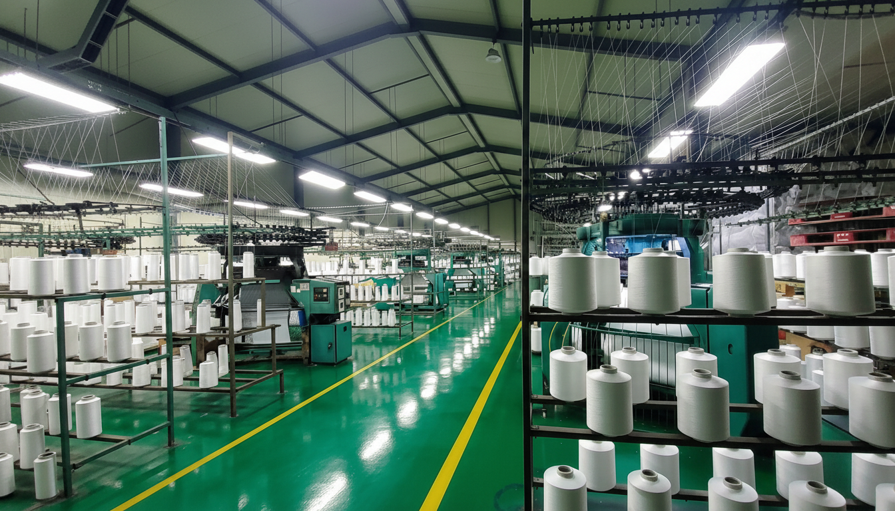
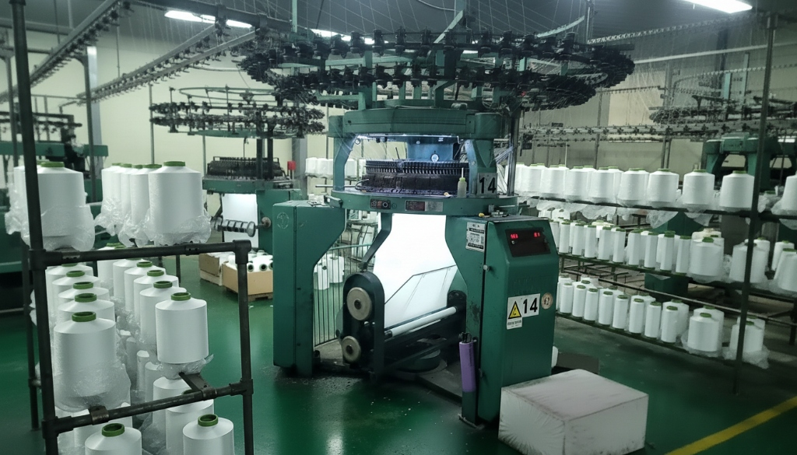

생산과 공급
원단을 직접 만들고,
필요한 생산을 준비합니다.
원단의 조건을,
만드는 곳에서 살핍니다.
화성섬유는 원사를 직접 매입해 편직하는 공장으로, 원단을 이루는 원사와 조직을 생산 과정에서 살핍니다.
필요한 원단이나 샘플을 바탕으로 조건을 확인하고, 준비된 생지와 원단 또는 새로운 편직 가능성을 검토합니다.



OUR PRODUCTION BASE
안정적인 공급을 위한
화성섬유의 준비
원사 매입부터 직접 편직, 생지와 원단의 확보까지.
필요한 생산을 이어갈 수 있는 기반을 갖추고 있습니다.
원사·생지·원단의 준비 상태는 품목과 사양에 따라 확인합니다. 원단 이미지는 질감 참고용입니다.
THE FIRST CONVERSATION
알고 계신 것부터
이야기해 주세요.
원단의 이름이나 샘플, 제품의 용도 중
편한 방법으로 상담을 시작할 수 있습니다.
원단명알고 있는 원단의 이름
샘플사용 중이거나 찾는 원단
사용처만들고자 하는 제품이나 용도
FROM INQUIRY TO DELIVERY
문의에서 출고까지
필요한 조건에 맞춰 원단을 확인하고 준비합니다.
- 문의
- 상담
- 샘플 확인·분석
- 생지 확인
- 편직필요 시
- 컬러 B/T·확인특정 컬러 필요 시
- 본작업
- 출고
맞는 생지가 없으면 새 편직의 가능 여부·최소 생산 수량·기간을 확인합니다.
보유 생지가 있어도 특정 컬러가 필요하면 컬러 B/T를 진행합니다. 가공 조건에 따라 최소 작업량이 적용될 수 있습니다.